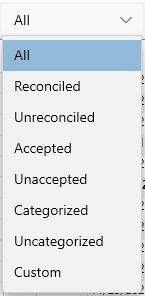

Filtering#

This drop down appears at the top of the transaction view and allows you to quickly filter out certain transactions from view as follows:
All#
Show everything (the default)
Reconciled#
Show only those transactions that have been reconciled. See Balancing Accounts
Unreconciled#
Show only those transactions that have not been reconciled. See Balancing Accounts
Accepted#
Show only those transactions that have not accepted. See Online Banking.
Unaccepted#
Show only those transactions that have not been accepted. See Online Banking. See also Unaccepted Report.
Categorized#
Show only those transactions that have category information.
Uncategorized#
Show only those transactions that have no category information yet.
Custom#
This is reserved for use by the program.
See also Quick Search | Advanced Queries